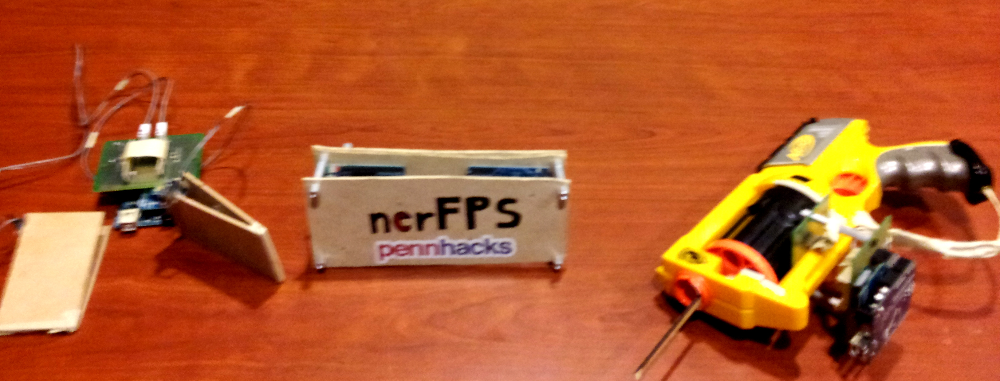

nerFPS
PennHacks 2013 - University of Pennsylvania
nerFPS in action
PennHacks presentation - Starting at 5:20

Description
nerFPS is a device which brings a brand new UI for playing FPS games. Powered with a hacked Nerf Gun, 2 custom pedals and a leap motion sensor, it brings a real world experience to playing games like Counter Strike, Call of duty etc. This project won 2nd place at the PennHacks hackathon conducted from the 15-17 Feb 2013 at UPenn.
Details
The leap motion helped us track the gun point in real time, and an onboard trigger detection on the nerf gun wirelessly sent data to the computer which interpreted it as a shoot command. Similarly, the pedals were also wirelessly linked to communicate motion commands to the computer. With these capablities, we were able to play Counter Strike using an "actual" gun and by actual moving our feet (though not too much).
|